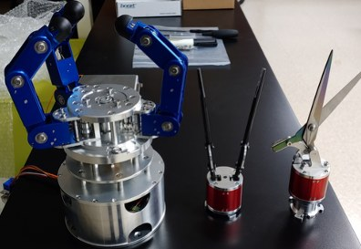
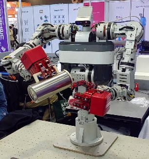
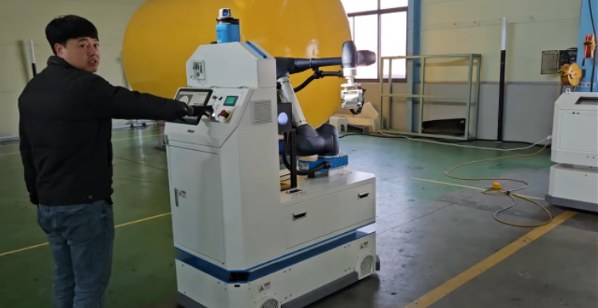
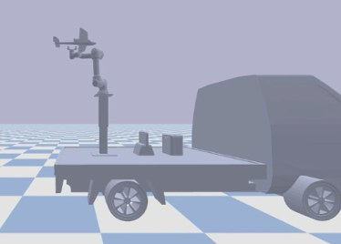
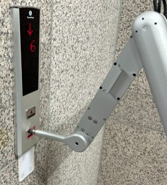
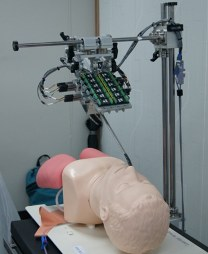

로봇 핸드 Robotic hands & grippers
형상과 강성이 제각각인 물체를 안정적으로 잡고 다루는 로봇 핸드와 그리퍼를 설계합니다. 와이어 구동 메커니즘과 모듈형 손가락 구조를 연구하고, 3D 프린터로 빠르게 시제작해 시험합니다.
파지, 조작, 와이어 구동, 모듈형 핸드
SHARE는 Synergetic Human Aiding Robotics Engineering의 머리글자입니다. 사람과 로봇이 서로의 강점을 더해 함께 일하고, 그 결과로 사람의 일을 덜어 주는 로봇 공학. 연구실 이름이 곧 연구 방향입니다.
연구실을 이끄는 윤현수 교수님은 17년 넘게 로봇 메커니즘과 시스템을 연구하며 병원·기업과 19개 이상의 공동연구를 수행했습니다. 수술 로봇의 연속체 메커니즘에서 시작한 경험이 로봇 핸드, 공장 자동화용 협업 로봇, 학습 기반 피지컬 AI로 이어지고 있습니다.
우리는 논문으로 끝나지 않는 로봇을 지향합니다. 연구실의 3D 프린터로 손가락 하나까지 직접 시제작하고, 협동로봇 위에 올려 시험한 뒤, 사람이 실제로 일하는 현장에서 검증합니다.

형상과 강성이 제각각인 물체를 안정적으로 잡고 다루는 로봇 핸드와 그리퍼를 설계합니다. 와이어 구동 메커니즘과 모듈형 손가락 구조를 연구하고, 3D 프린터로 빠르게 시제작해 시험합니다.
파지, 조작, 와이어 구동, 모듈형 핸드
로봇 표면을 감싸는 피부형 센서로 사람의 접촉과 접근을 감지합니다. 닿은 위치와 힘을 읽어, 사람과 로봇이 안전하게 맞닿으며 함께 일하는 물리적 상호작용을 만듭니다.
촉각 센싱, 접촉 위치 추정, pHRI, 로봇 피부

협동로봇 팔과 양팔 시스템의 기구학, 역기구학, 메커니즘 해석과 제어를 연구합니다. 사람이 하던 조립과 피킹 작업을 로봇이 나누어 맡도록 만듭니다.
기구학, 양팔 제어, 인간-로봇 협업, 빈 피킹

이동 로봇 위에 협동로봇 팔을 얹은 자율 이동 매니퓰레이터를 개발합니다. 베이스가 움직이거나 흔들려도 말단의 자세를 유지하며, 넓은 공간을 오가며 작업하도록 합니다.
모바일 매니퓰레이션, 전신 제어, 자율 주행

물리 시뮬레이션에서 로봇의 정책을 학습하고 실제 로봇으로 옮기는 Sim-to-Real 강화학습을 연구합니다. 사람이 일일이 설계하기 어려운 동작을 로봇이 스스로 익히게 합니다.
물리 시뮬레이션, sim-to-real, 정책 학습

보고, 이해하고, 실제로 움직이는 로봇 지능을 만듭니다. 비전 기반 인식과 비전-언어-행동(VLA) 모델로, 엘리베이터 버튼을 찾아 누르는 일처럼 일상 공간의 일을 로봇이 대신하게 합니다.
객체 인식, VLA 모델, 일상 환경 작업

휘어지고 좁은 경로를 지나는 연속체 내시경과 수술 도구, 마스터-슬레이브 원격 조작, 영상 기반 수술 내비게이션을 개발해 최소침습 수술을 돕습니다. 상악동 수술용 듀얼 마스터-슬레이브 시스템은 IEEE Transactions on Robotics(2018)에 발표되었습니다.
연속체 로봇, 마스터-슬레이브, 수술 내비게이션, 의약품 전달
진행 중인 과제 정보를 정리하고 있습니다.
제조 공정에서의 인간-로봇 협업
로봇 핸드
윤현수 박사가 수행한 과제입니다. 이 밖에 병원·기업과 공동연구 프로젝트 19개 이상을 수행했습니다.
구성원 정보를 불러오는 중입니다.
SHARE Lab 구성원이 저자나 발명자로 참여한 저널 논문, 학술대회 논문, 특허입니다. 굵게 표시된 이름을 누르면 해당 구성원 소개로 이동합니다.
논문 정보를 불러오는 중입니다.
연구실과 윤현수 박사가 만들고 시험한 로봇입니다. 사진을 누르면 크게 볼 수 있습니다.
연구실이 보유한 장비와 담당자입니다. 장비 사용이나 예약은 담당자에게 문의하세요.
장비 정보를 불러오는 중입니다.
SHARE Lab에 진학, 인턴, 공동연구나 기술 협력에 관심이 있다면 윤현수 교수님께 이메일을 보내 주세요. 관심 있는 연구 분야와 간단한 소개를 함께 적어 주시면 빠르게 안내해 드립니다.
hsyoon@dgist.ac.kr